Alex's Big 'ol Boat Page
Hello and welcome to my website!
Here, I created a few pages based on some historical naval vessels that I thought had interesting stories. I tried to go for a wiki-type of site with a bit less fluff than you'd find on the respective articles over at Wikipedia. I thought that making a few pages would look good for the résumé, and I figured I might as well base it around a topic that I found interesting. All of the ships mentioned here played parts in the Second World War, so it's kind of crazy to see how fast technology improves during times of conflict (Just take a look at Yamato's page, which elaborates on the obsolescence of battleships compared to aircraft carriers, to see what I mean).
To begin, select one of the above countries to drop down to their respective "docks."
Each "dock" has three ships. I tried to go for a unique range of ships, including destroyers and submarines, while also including extremely prominent names, such as Enterprise.
Thanks for tuning in!
United States Navy
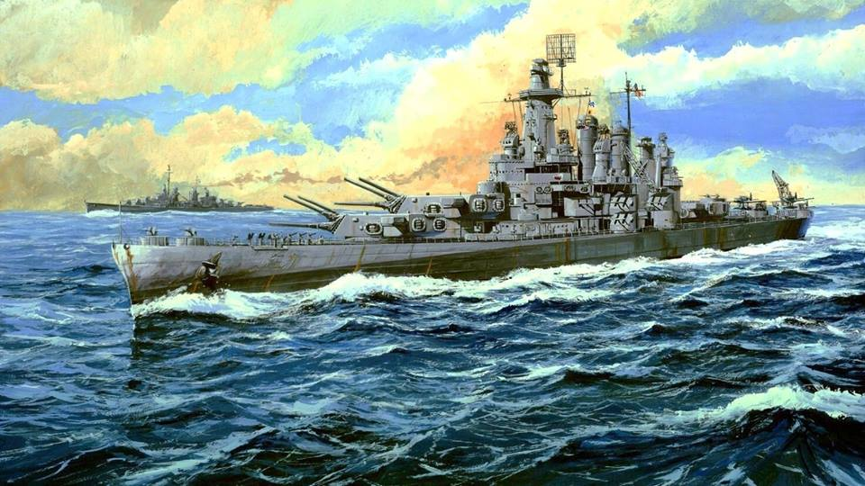
Fast Battleship USS Washington (BB-56)
Laid down at Philadelphia Naval Shipyard, 14 June, 1938
Succeeded by the South Dakota-class
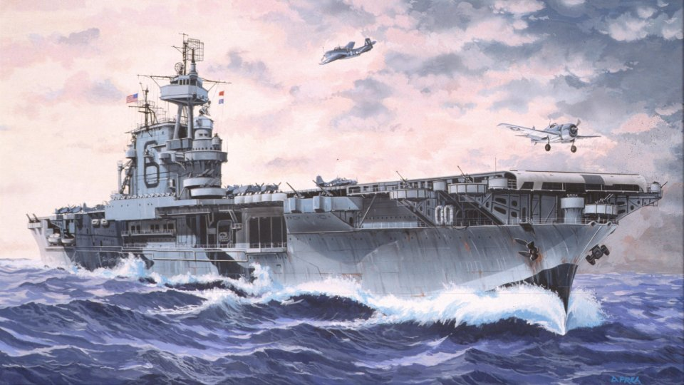
Aircraft Carrier USS Enterprise (CV-6)
Laid down at Newport News Shipbuilding, 16 July, 1934
Succeeded by the Wasp and the Essex-class
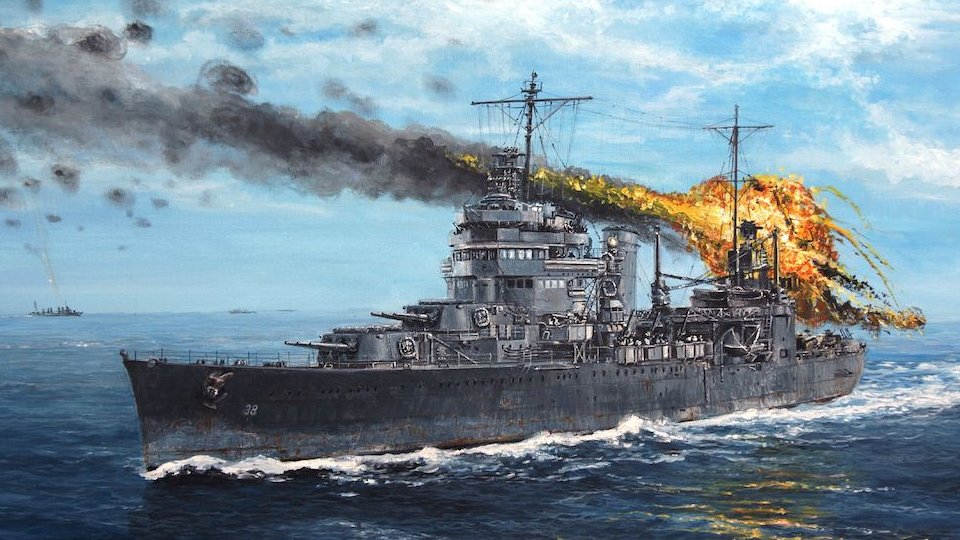
Heavy Cruiser USS San Francisco (CA-38)
Laid down at Mare Island Navy Yard, 9 September, 1931
Succeeded by the Wichita and the Baltimore-class
Imperial Japanese Navy
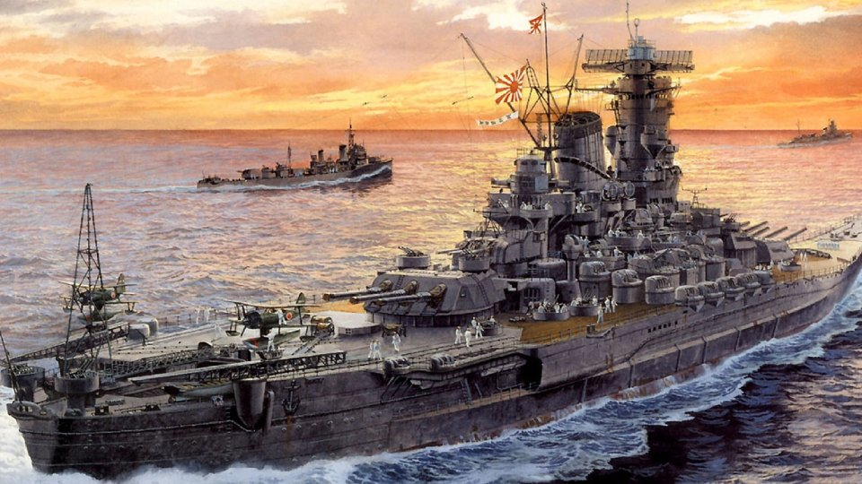
Japanese Battleship Yamato (大和)
Laid down at Kure Naval Arsenal, 4 November, 1937
Planned to be succeeded by the cancelled A-150 class
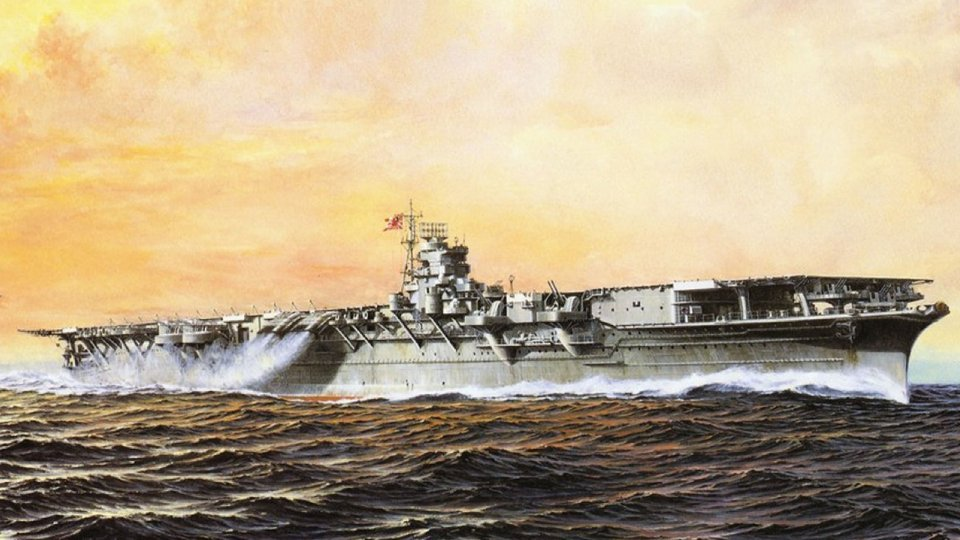
Japanese Aircraft Carriers Shōkaku and Zuikaku (翔鶴 and 瑞鶴)
Laid down at Yokosuka Naval Arsenal and Kawasaki Shipyards, 12 December, 1937, and 25 May, 1938
Succeeded by the Hiyō-class
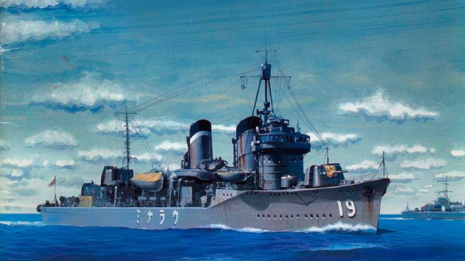
Japanese Destroyer Ayanami (綾波)
Laid down at Fujinagata Shipyards, 20 January, 1928
Succeeded by the Akatsuki subclass and Hatsuharu-class
British Royal Navy
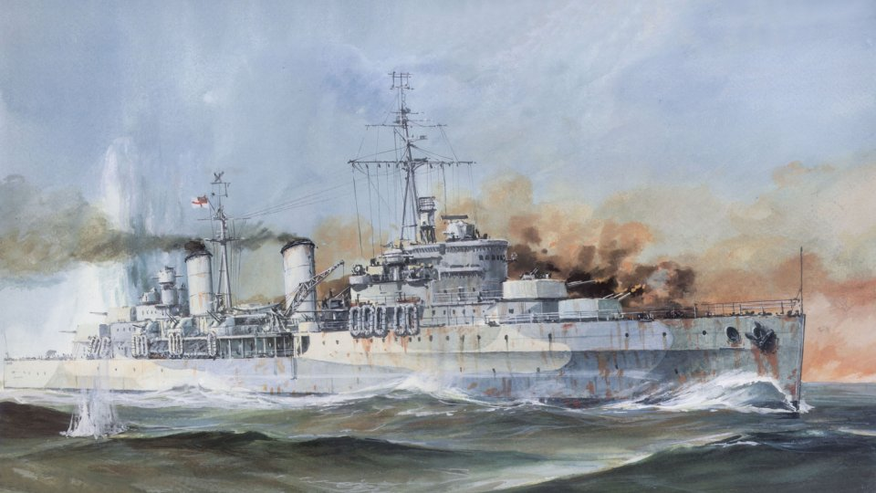
Light Cruiser HMS Belfast (Pennant Number C35)
Laid down at Harland and Wolff Shipyard, 10 December, 1936
Succeeded by the Crown Colony-class and the Dido-class
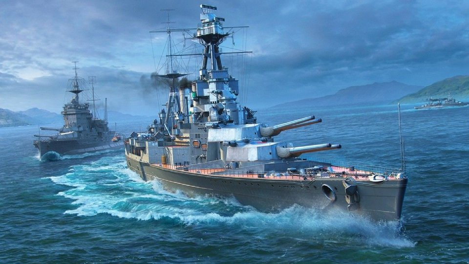
Battlecruiser HMS Hood (Pennant Number 51)
Laid down at John Brown & Company, 1 September, 1916
Planned to be succeeded by the canceled G3 class
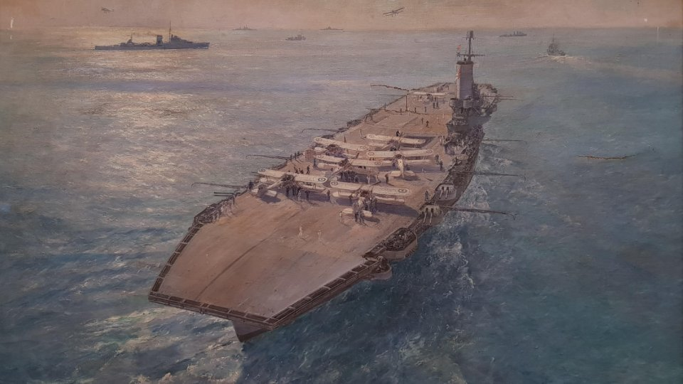
Aircraft Carrier HMS Ark Royal (Pennant Number 91)
Laid down at Cammell Laird, 16 September, 1935
Succeeded by the Illustrious-class
German Kriegsmarine
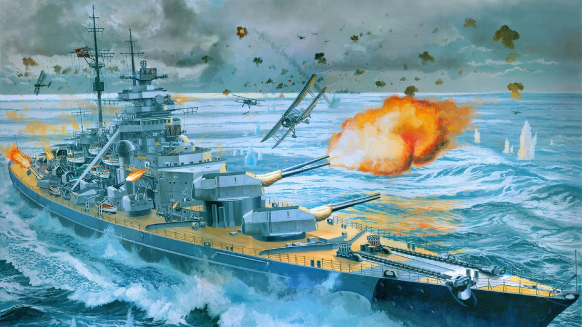
German Battleship Bismarck
Laid down at Blohm & Voss, 1 July, 1936
Planned to be succeeded by the cancelled H class
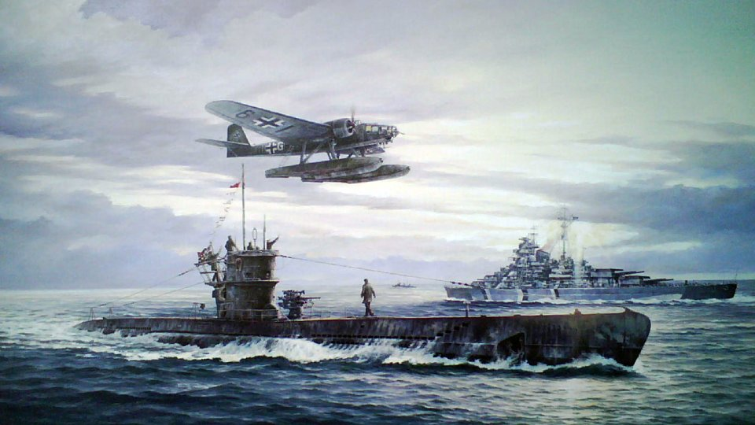
German Submarine U-47
Laid down at Friedrich Krupp Germaniawerft, 27 February, 1937
Succeeded by the Type VIIC subclass and the Type IX submarine
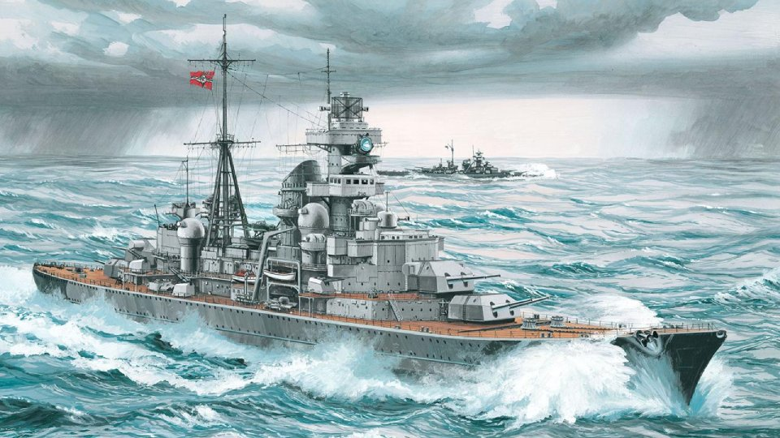
German Heavy Cruiser Prinz Eugen
Laid down at Friedrich Krupp Germaniawerft, 23 April, 1936
Planned to be succeeded by the cancelled P class